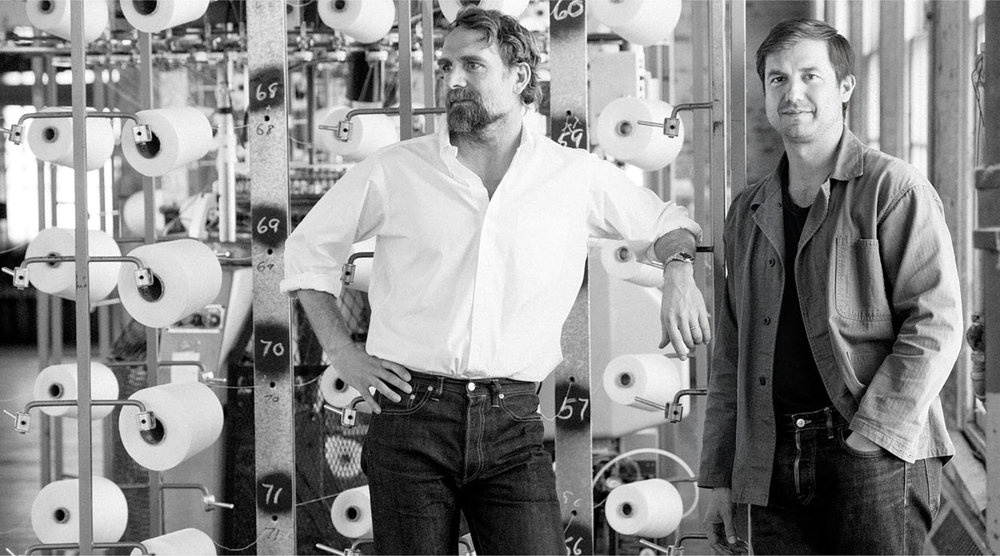

OUR STORY
STYLE WITH ZEUS MAKES MAKES UPDATED, MODERN AMERICAN CLASSICS
WITH A COMMITMENT TO TIMELESSNESS, QUALITY,
AND OUR CALIFORNIA ROOTS.
Founded in 2013 in Venice, California, by Sasha Koehn and Erik Allen Ford,
we started out of a 350-square-foot garage with locally-made jeans
and tees and a simple goal to make clothing that will stand the test of time.
From the start, we’ve remained committed to quality craftsmanship,
combining old-school manufacturing techniques and modern technology to create
wardrobe essentials that make it easy to be the best dressed in the room.
Each piece in our collection has a little bit of us infused in it; a laidback,
effortless style that looks as good as it feels. We call it the spirit of California.
DESIGN
Our aim is for our clothing to outlive us.
Not just in that it lasts a lifetime but that
it will stand the test of time.
We’ve dedicated ourselves to crafting garments that are not only
impeccably constructed but also timeless in their design.
By deconstructing and refining the clothing Americans have
worn for generations, we’ve created modern, elevated classics
that we believe you’ll reach for time and again.
GLOBAL PARTNERSHIP
Our clothes are made in the finest factories in the world,
combining innovative technologies with meticulous, hand-crafted quality.
Our choice in partnerships, both domestic and overseas, rests on our commitment to that standard of quality.
We ensure fair working conditions and equitable pay, helping to create environments conducive to creating
the best possible clothing at incredibly fair prices.
As we continue to expand our horizons and reach new heights,
I'm delighted to announce our latest milestone - the establishment of a robust global partnership.
This partnership marks a significant step forward in our journey towards excellence. By joining forces with esteemed partners around the world, we are not only extending our reach but also enriching our capabilities to serve our customers better.
Together, we will leverage our combined expertise, resources, and networks to unlock new opportunities
and drive sustainable growth.
This collaboration reaffirms our commitment to innovation,
quality, and customer satisfaction on a global scale.
STYLE WITH ZEUS
continuing the craftsmanship: Zeus Fahsion becomes, Style with Zeusknitting mills

COME HAVE A DRINK
We’ve got great neighbors,
classic clothes, and cold drinks
up for grabs whenever you wanna stop by.
Step into our stylish lounge where the ambiance is
as inviting as the drinks are delightful.
Relax in plush seating, surrounded by chic decor and lively music,
as our skilled bartenders craft the perfect libation to suit your mood.
From timeless favorites like martinis and mojitos to inventive creations
crafted with locally sourced ingredients and artisanal spirits, each sip
is a symphony of flavors designed to tantalize your taste buds and leave you craving for more.
See you soon.